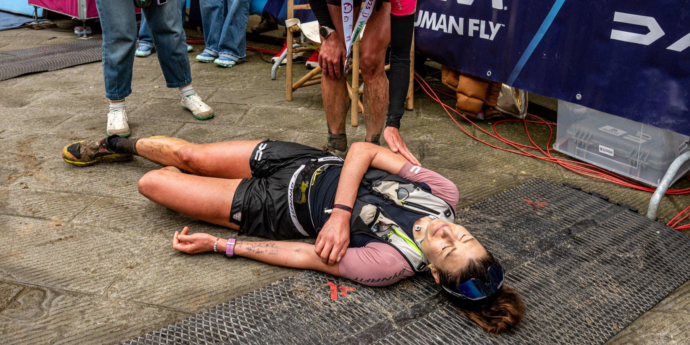
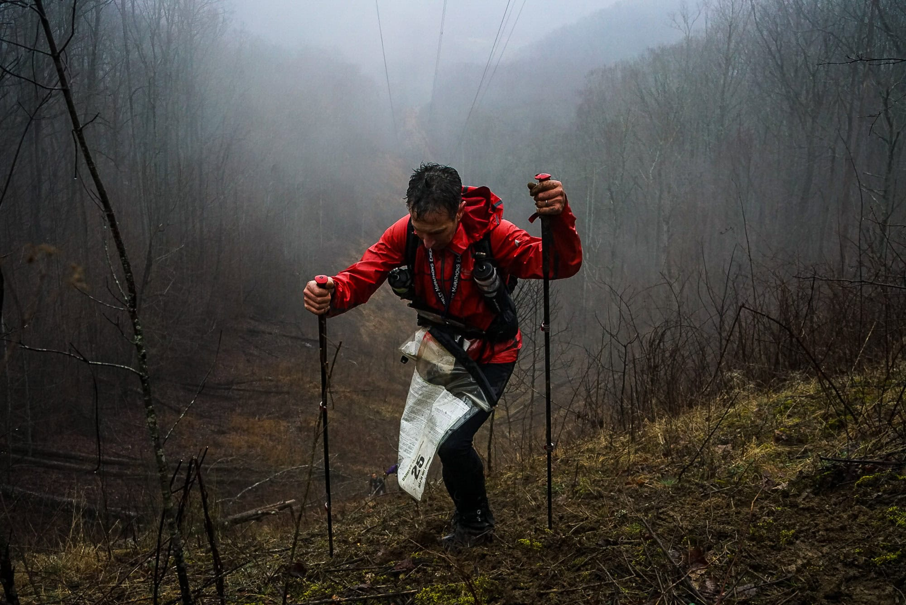
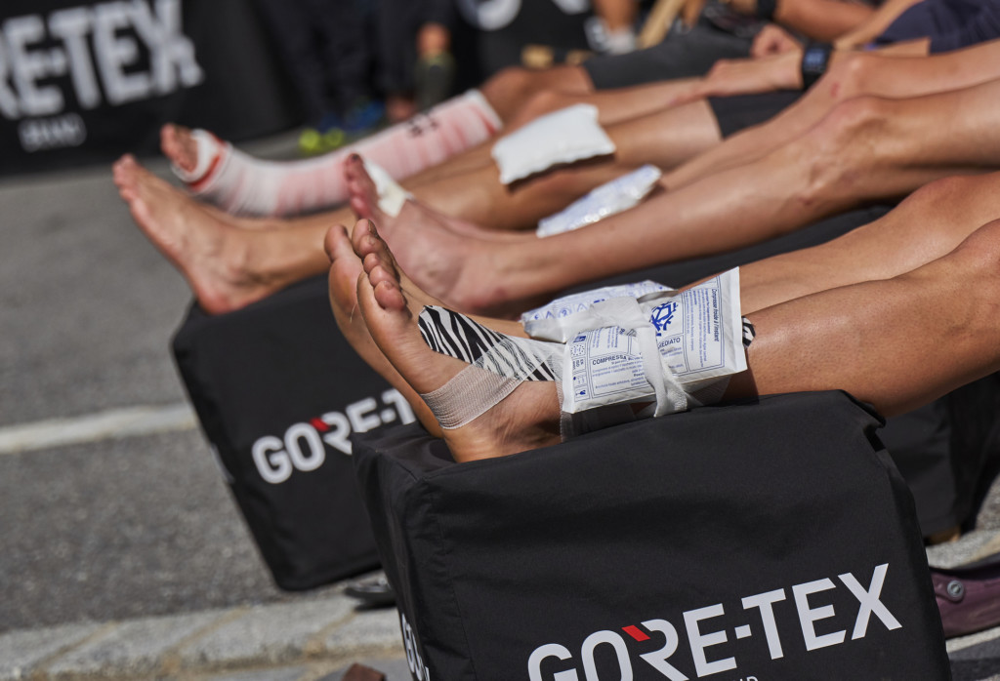
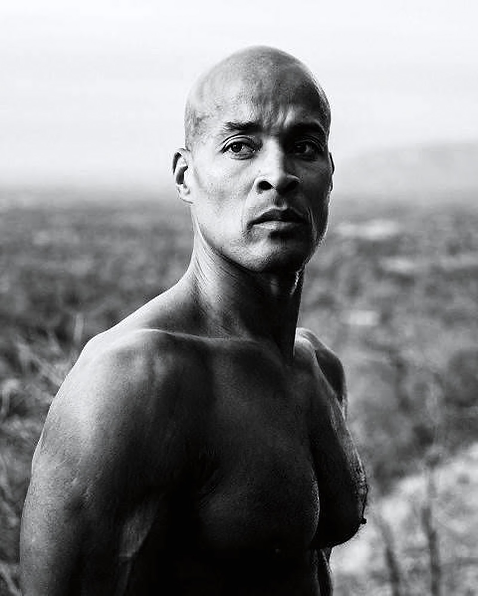
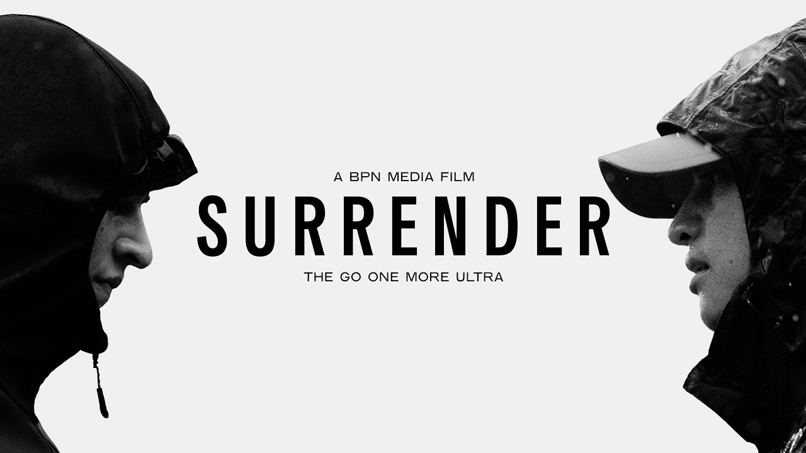
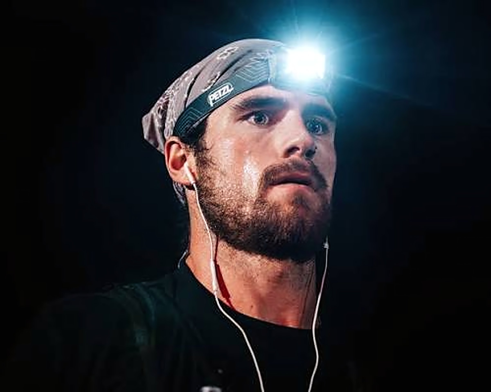

MUSKELABBAU UND MUSKELSCHÄDEN
Ultramarathons verursachen extreme Muskelschäden. Über 100 Meilen zu laufen, reißt wiederholt Muskelfasern ein, was zu Entzündungen führt.
Erkunde die tiefgreifenden körperlichen und psychischen Herausforderungen, die das Ultramarathon-Erlebnis prägen.
Ultramarathons bedeuten nicht einfach nur, weit zu laufen. Sie sind ein umfassender Angriff auf die menschliche Belastbarkeit – mental, körperlich und emotional. Läufer müssen sich nicht nur mit Muskelermüdung auseinandersetzen, sondern auch mit Halluzinationen, Verzweiflung und den tiefsten Bereichen ihrer Psyche. Diese Herausforderungen zu verstehen, ist für jeden essenziell, der einen Ultralauf in Betracht zieht.



Ultramarathons verursachen extreme Muskelschäden. Über 100 Meilen zu laufen, reißt wiederholt Muskelfasern ein, was zu Entzündungen führt.
Laufen verbraucht deine Glykogenspeicher. Ein Ultramarathon dauert weit länger, als der Körper allein mit gespeicherter Energie durchhalten kann.
Langes Laufen verursacht schwere Magen-Darm-Probleme. Das Verdauungssystem fährt beim intensiven Laufen herunter.
Viele Ultramarathons verlangen, durch die Nacht zu laufen. Schlafentzug verursacht Halluzinationen und beeinträchtigt die Entscheidungsfähigkeit.
Wüsten-Ultras setzen Läufer extremer Hitze (45 °C/113 °F+) aus. Berg-Ultras bringen Kälte, Regen und Gewitter mit sich.
Medizinische Aspekte (sachlich korrekte Informationen)
Ultramarathons sind riskant, aber nicht so gefährlich, wie gelegentliche Beobachter vielleicht denken. Die meisten unerwünschten Ereignisse entstehen durch mangelhafte Vorbereitung oder das Ignorieren von Warnsignalen. Zu den tatsächlichen Gesundheitsrisiken gehören:
Die gefährlichste akute Erkrankung. Die Körperkerntemperatur übersteigt während der Belastung 40 °C. Vorbeugbar durch ausreichende Flüssigkeitszufuhr, angepasstes Tempo und Kühlung. Bei früher Erkennung behandelbar.
Übermäßige Wasseraufnahme ohne Elektrolytersatz verdünnt das Blutnatrium. Sie verursacht Verwirrtheit, Schwellungen und Krampfanfälle.
Extreme Belastung in Kombination mit Dehydrierung kann die Nieren belasten. Meist vorübergehend, erfordert aber ärztliche Behandlung.
Schwere Muskelschäden setzen Myoglobin ins Blut frei, das die Nieren schädigt. Selten, aber ernst.
Gelenkschäden, besonders an Knien und Knöcheln, durch wiederholte Stöße. Oft erholen sie sich, können aber ohne angemessene Regeneration langfristige Probleme verursachen.


Risikominimierung: Ein gutes Training (schrittweiser Trainingsaufbau), angemessene Vorbereitung, das Hören auf den eigenen Körper, richtige Ernährung und Flüssigkeitszufuhr, ein konservatives Tempo zu Beginn des Rennens sowie die Inanspruchnahme medizinischer Unterstützung bei Bedarf verringern das Risiko deutlich. Die meisten Ultraläufer absolvieren mehrere Ultras ohne nennenswerte gesundheitliche Komplikationen.

BPN Media
Die psychologische und emotionale Seite des Ultralaufens.
AUF YOUTUBE ANSEHEN →Etwa in der 20. Stunde eines 100-Meilen-Rennens treten Läufer in die sogenannte „Pain Cave“ ein. Alles tut weh. Die Beine schreien, die Füße sind kaputt, du bist erschöpft, und dein Geist bettelt dich an aufzuhören. Das Einzige, was dich vom Aufgeben trennt, ist reine mentale Willenskraft.
Nach mehr als 24 Stunden Laufen, besonders während der Nachtabschnitte, sind Halluzinationen häufig. Läufer sehen Menschen, die nicht da sind, hören Stimmen oder erleben eine verzerrte Wirklichkeit. Diese mentalen Zustände zu bewältigen, ist der Schlüssel zum Finish.
Ein Ultramarathon bedeutet über 20 Stunden Zeit, um ans Aufgeben zu denken. Läufer durchlaufen immer wieder Phasen von Motivation, Zweifel, Verzweiflung und Entschlossenheit. Mentale Vorbereitung ist genauso wichtig wie das körperliche Training.
Einen Ultramarathon zu beenden, bringt eine tiefe emotionale Befreiung mit sich. Läufer weinen an der Ziellinie nach Monaten des Trainings und Stunden des Leidens. Das psychische Wachstum, das aus dem Finish eines Ultras entsteht, ist transformierend.

Trainierte Ultraläufer haben eine bessere Herz-Kreislauf-Gesundheit als sedentäre Bevölkerungsgruppen.
Ultraläufer entwickeln eine außergewöhnliche Schmerztoleranz.
Die meisten Ultraläufer absolvieren mehrere Ultras ohne nennenswerte gesundheitliche Komplikationen.
Ultralauf-Communities legen Wert auf Sicherheit und medizinische Unterstützung.
Halluzinationen bei Ultras sind vorübergehend und verschwinden nach dem Schlafen.
Viele Läufer berichten von verbesserter psychischer Gesundheit und Resilienz durch das Ultra-Training.